1. What's MLOps?• MLOps is a set of processes and automation for managing code, data, and models to improve performance, stability and long-term efficiency of ML systems.
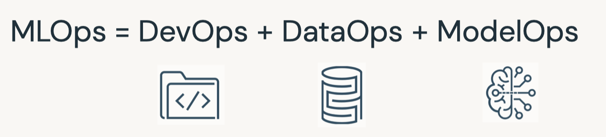
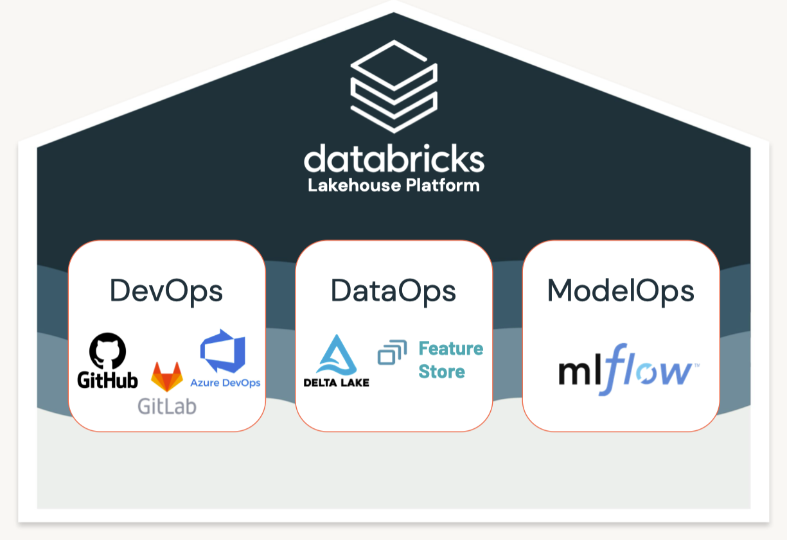
Hardest Part of ML isn't ML, it's Data
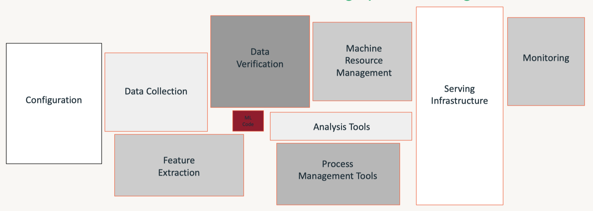
• Guiding principles– Always keep your business goals in mind– Take a data-centric approach to machine learning– Implement MLOps in a modular fashion– Process should guide automation.• Benefits of MLOps– It helps reducing risk* Technical risk → poorly performing models, fragile infrastructure* Compliance risk → violating regulatory or corporate policies– It improves long-term efficiency through automation* Catch errors before they hit production* Avoid slow, manual processes•
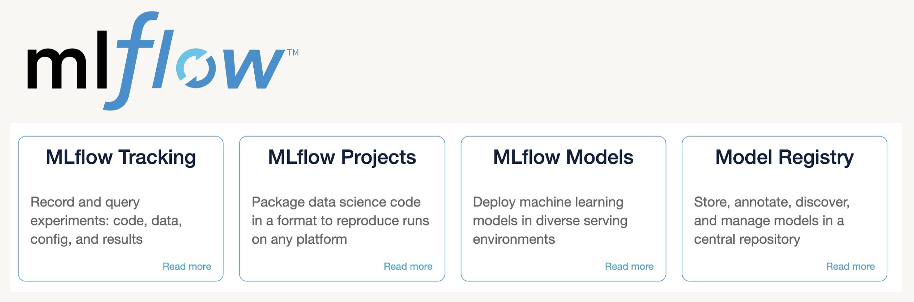
• Data is never static: model centric → data centric
2. Data Management• Production machine learning solutions start with reproducible data management. • Strategies that we'll cover in this training include Delta Table Versioning and the Databricks Feature Store.• Managing the machine learning lifecycle means...– Reproducibility of data– Reproducibility of code– Reproducibility of models– Automated integration with production systems• • We'll begin with data management, which can be accomplished in a number of ways including:– Saving a snapshot of your data– Table versioning and time travel using Delta– Using a feature table2.1. Delta Lake
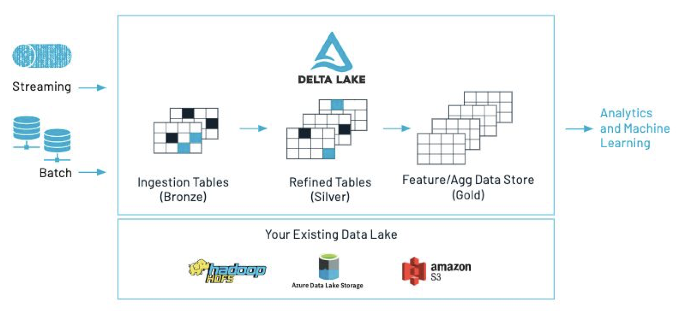
• Delta Lake key features:– ACID transactions → reliability – Time travel (data versioning) → reliability, error recovery, synchronization – Schema enforcement and evolution → reliability – Audit history → data governance and compliance – Parquet format + transaction log – Compatible with Apache Spark API• Delta Lake Optimize– Compaction– Data skipping– Z-ordering– FAQs on Optimize2.1.1. Versioning with Delta Tables• Sample code to read and write data to a delta table:• •
• You can also query based upon timestamp.– Note: Note that the ability to query an older snapshot of a table (time travel) is lost after running a VACUUM command.•
timestamp = spark.sql(f"DESCRIBE HISTORY delta.`{DA.paths.airbnb}`").orderBy("version").first().timestampdisplay(spark.read.format("delta").option("timestampAsOf", timestamp).load(DA.paths.airbnb))
• • Example syntax for vacuum•
VACUUM eventsTable -- vacuum files not required by versions older than the default retention periodVACUUM '/data/events' -- vacuum files in path-based tableVACUUM delta.`/data/events/`VACUUM delta.`/data/events/` RETAIN 100 HOURS -- vacuum files not required by versions more than 100 hours oldVACUUM eventsTable DRY RUN -- do dry run to get the list of files to be deleted
2.1.2. Feature Store• Production ML → Production Software + Data• A feature store is a centralized repository of features.• It enables feature sharing and discovery across your organization and also ensures that the same feature computation code is used for model training and inference.• What challenges does the Feature Store help solve? A key issue many ML pipelines struggle with is feature reproducibility and data sharing. The Feature Store lets different users across the same organization utilize the same feature computation code.• An article on the importance of data reproducibility.
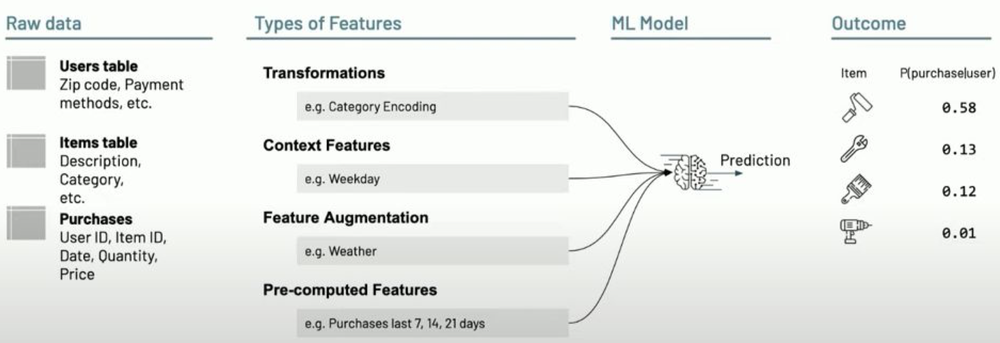
• Data Challenges in ML: – Data silos– Online/offline skew– Client configuration– Data freshness
from databricks import feature_storefs = feature_store.FeatureStoreClient()help(fs.create_table)
• Create Feature Table → Next, we can create the Feature Table using the create_table method. This method takes a few parameters as inputs:– name → A feature table name of the form <database_name>.<table_name>– primary_keys → The primary key(s). If multiple columns are required, specify a list of column names.– df → Data to insert into this feature table.– schema → Feature table schema. Note that either schema or df must be provided.– description → Description of the feature table– partition_columns → Column(s) used to partition the feature table. * Note: As a best practice, Databricks recommends you do NOT partition tables that contains less than a terabyte of data.* •
table_name =f"{DA.schema_name}.airbnb"print(f"Table: {table_name}\n")fs.create_table( name=table_name, primary_keys=["id"], df=airbnb_df, partition_columns=["neighbourhood"],# for such a small dataset we shouldn't partition, this is just for demonstration description="Original Airbnb data")
• Alternatively, you can create_table with schema only (without df), and populate data to the feature table with fs.write_table, fs.write_table has both overwrite and merge mode.• •
• We can also look at the metadata of the feature store via the FeatureStore client by using get_table().• •
print(f"Feature table description : {fs.get_table(table_name).description}")print(f"Feature table data source : {fs.get_table(table_name).path_data_sources}")
• Overwrite Feature → We set the mode to overwrite to remove the deleted feature columns from the latest table. Let's say, we added a column and removed another one.– By navigating back to the UI, we should see that the modified date has changed and a new column has been added to the feature list.* The deleted columns are still present in the schema of the table and their values have been replaced by null.• •
fs.write_table(name=table_name, df=airbnb_df_short_reviews, mode="overwrite")# Display most recent tablefeature_df = fs.read_table(name=table_name)display(feature_df)
• Question: Why do we care about Data Management? – Answer: Data Management is an oftentimes overlooked aspect of end-to-end reproducibility.• Question: How do we version data with Delta Tables? – Answer: Delta Tables are automatically versioned everytime a new data is written. Accessing a previous version of the table is as simple as using display(spark.sql(f"DESCRIBE HISTORY delta.{delta_path}")) to find the version to revert to and loading it in. You can also revert to previous version using timestamps.• • Question: What challenges does the Feature Store help solve? – Answer: A key issue many ML pipelines struggle with is feature reproducibility and data sharing. The Feature Store lets different users across the same organization utilize the same feature computation code.[Back To Top]
3. Experiment Tracking (MLflow)• Record runs, and keep track of models parameters, results, code, and data from each experiment and in one place.• • Over the course of the machine learning life cycle...– Data scientists test many different models– Using various libraries– Each with different hyperparameters– • Tracking these various results poses an organizational challenge, including...– Storing experiments– Results– Models– Supplementary artifacts– Code– Data snapshots
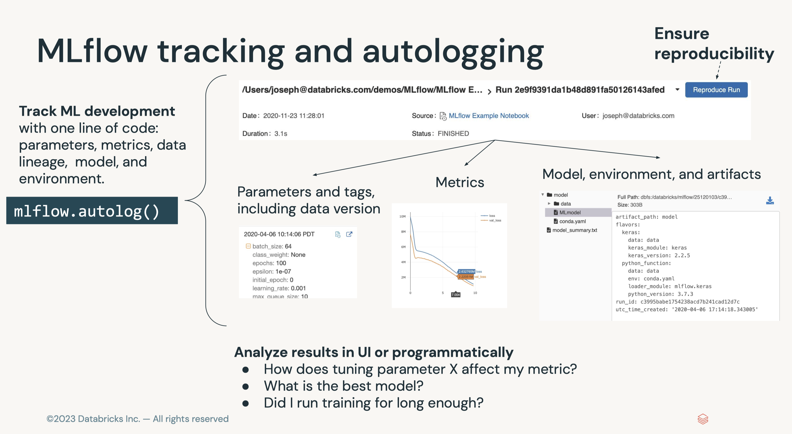
3.1. Tracking Experiments with MLflow• MLflow Tracking is...– a logging API specific for machine learning– agnostic to libraries and environments that do the training– organized around the concept of runs, which are executions of data science code– runs are aggregated into experiments where many runs can be a part of a given experiment– An MLflow server can host many experiments.• • Each run can record the following information:– Parameters → Key-value pairs of input parameters such as the number of trees in a random forest model– Metrics → Evaluation metrics such as RMSE or Area Under the ROC Curve– Artifacts → Arbitrary output files in any format. This can include images, pickled models, and data files– Source → The code that originally ran the experiment• MLflow docs• • Experiments can be tracked using libraries in Python, R, and Java as well as by using the CLI and REST calls.• The experiment UI can be accessed from the sidebar.•
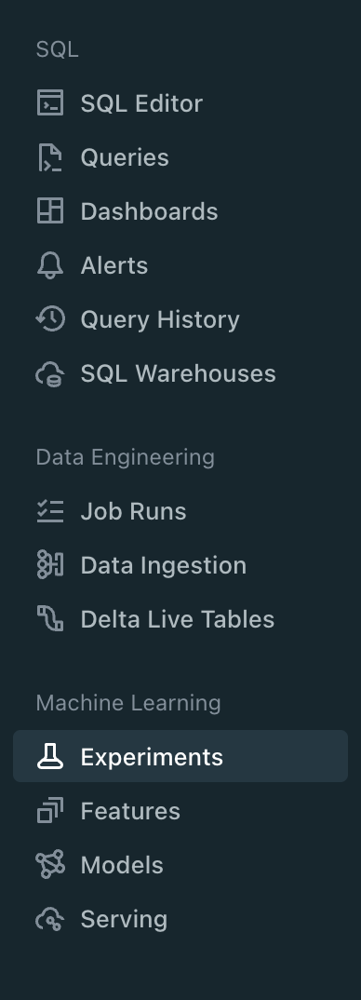
• • Note: Every Python notebook in a Databricks Workspace has its own experiment. When you use MLflow in a notebook, it records runs in the notebook experiment. A notebook experiment shares the same name and ID as its corresponding notebook.• Log a basic experiment by doing the following:1. Start an experiment using mlflow.start_run() and passing it a name for the run2. Train your model3. Log the model using mlflow.sklearn.log_model()4. Log the model error using mlflow.log_metric()5. Print out the run id using run.info.run_id5. •
3.1.1. Parameters, Metrics, Artifacts, Signature, and Input Examples• In the last example, we logged the run name, an evaluation metric, and your model itself as an artifact. • Now let's log parameters, multiple metrics, and other artifacts including the feature importances.• • Note: It is a best practice to also log a model signature and input example. This allows for better schema checks and, therefore, integration with automated deployment tools.• • Signature– A model signature is just the schema of the input(s) and the output(s) of the model– We usually get this with the infer_schema function• • Input Example– This is simply a few example inputs to the model– This will be converted to JSON and stored in our MLflow run– It integrates well with MLflow model serving• • In general, logging a model with these looks like .log_model(model, model_name, signature=signature, input_example=input_example).• Where do logged artifacts get saved? Logged artifacts are saved in a directory of your choosing. On Databricks, this would be DBFS (Databricks File System).• • First, create a function to perform this.– To log artifacts, we have to save them somewhere before MLflow can log them. – The code below accomplishes that by using a temporary file that it then deletes.•
3.1.2. Querying Past Runs• You can query past runs programatically in order to use this data back in Python. The pathway to doing this is an MlflowClient object.• Note: You can also set tags for runs using client.set_tag(run.info.run_id, "tag_key", "tag_value")• •
from mlflow.tracking import MlflowClientclient = MlflowClient()# display experiment runsdisplay(client.search_runs(experiment_id))# or use "mlflow-experiment" tableruns = spark.read.format("mlflow-experiment").load(experiment_id)display(runs)# Pull the last runrun_rf = runs.orderBy("start_time", ascending=False).first()client.list_artifacts(run_rf.run_id)# Return the evaluation metrics for the last runclient.get_run(run_rf.run_id).data.metrics# Reload the model and look at the feature importancemodel = mlflow.sklearn.load_model(f"runs:/{run_rf.run_id}/random_forest_model")model.feature_importances_
3.1.3. Autologging• So far we have explored methods for manually logging models, parameters, metrics, and artifacts to MLflow.• However, in some cases it would be convenient to do this automatically. This is where MLflow Autologging comes in.– Autologging allows you to log metrics, parameters, and models without the need for explicit log statements.• • There are two ways to enable autologging:1. Call mlflow.autolog() before your training code. * This will enable autologging for each supported library you have installed as soon as you import it. * A list of supported libraries can be found here.2. Use library-specific autolog calls for each library you use in your code. * For example, enabling mlflow for sklearn specically would use mlflow.sklearn.autolog()• • Note: We do not need to put the code in a mlflow.start_run() block.• •
• Question: What can MLflow Tracking log? – Answer: MLflow can log the following:* Parameters: inputs to a model* Metrics: the performance of the model* Artifacts: any object including data, models, and images* Source: the original code, including the commit hash if linked to git• • Question: How do you log experiments? – Answer: Experiments are logged by first creating a run and using the logging methods on that run object (e.g. run.log_param("MSE", .2)).• • Question: Where do logged artifacts get saved? – Answer: Logged artifacts are saved in a directory of your choosing. On Databricks, this would be DBFS (Databricks File System).• • Question: How can I query past runs? – Answer: This can be done using an MlflowClient object. This allows you do everything you can within the UI programatically so you never have to step outside of your programming environment.[Back To Top]
4. Model Management - Intro• An MLflow pyfunc allows fully customizable deployments.• Once a model has been trained and bundled with the environment it was trained in, the next step is to package the model so that it can be used by a variety of serving tools. – Packaging the final model in a platform-agnostic way offers the most flexibility in deployment options and allows for model reuse across a number of platforms.– • MLflow models is a convention for packaging machine learning models that offers self-contained code, environments, and models.• • The main abstraction in this package is the concept of flavors:– A flavor is a different ways the model can be used.* For instance, a TensorFlow model can be loaded as a TensorFlow DAG or as a Python function.* Using an MLflow model convention allows for both of these flavors.– The python_function or pyfunc flavor of models gives a generic way of bundling models.– We can thereby deploy a python function without worrying about the underlying format of the model– • MLflow, therefore, maps any training framework to any deployment using these platform-agnostic representations, massively reducing the complexity of inference.– Arbitrary logic including pre and post-processing steps, arbitrary code executed when loading the model, side artifacts, and more can be included in the pipeline to customize it as needed → This means that the full pipeline, not just the model, can be preserved as a single object that works with the rest of the MLflow ecosystem.
[Back To Top]4.1. Custom Models Using pyfunc• A pyfunc is a generic python model that can define any arbitrary logic, regardless of the libraries used to train it. – This object interoperates with any MLflow functionality, especially downstream scoring tools. – As such, it's defined as a class with a related directory structure with all of the dependencies. – It is then "just an object" with a various methods such as a predict method. – Since it makes very few assumptions, it can be deployed using MLflow, SageMaker, a Spark UDF, or in any other environment.– pyfunc documentation– A generic example code and integration with XGBoost– An example that creates a basic class that adds n to the input values4.1.1. Implementation• We will train a random forest model using a pre-processed training set. The input dataframes are processed with the following steps:1. Create an additional feature (review_scores_sum) aggregated from various review scores.2. Enforce the proper data types.2. • When creating predictions from our model, we need to re-apply the same pre-processing logic to the data each time we use our model.• To streamline the steps, we define a custom RFWithPreprocess model class that uses a preprocess_input(self, model_input) helper method to automatically pre-processes the raw input it receives before executing a custom fit() method or before passing that input into the trained model's .predict() function. • This way, in future applications of our model we will no longer have to handle arbitrary pre-processing logic for every batch of data.•
import mlflowclassRFWithPreprocess(mlflow.pyfunc.PythonModel):def__init__(self, params):""" Initialize with just the model hyperparameters """ self.params = params self.rf_model =None self.config =Nonedefload_context(self, context=None, config_path=None):""" When loading a pyfunc, this method runs automatically with the related context. This method is designed to perform the same functionality when run in a notebook or a downstream operation (like a REST endpoint). If the `context` object is provided, it will load the path to a config from that object (this happens with `mlflow.pyfunc.load_model()` is called). If the `config_path` argument is provided instead, it uses this argument in order to load in the config. """if context:# This block executes for server run config_path = context.artifacts["config_path"]else:# This block executes for notebook runpass self.config = json.load(open(config_path))defpreprocess_input(self, model_input: pd.DataFrame)-> pd.DataFrame:""" Return pre-processed model_input """ processed_input = model_input.copy() processed_input["review_scores_sum"]=( processed_input["review_scores_accuracy"]+ processed_input["review_scores_cleanliness"]+ processed_input["review_scores_checkin"]+ processed_input["review_scores_communication"]+ processed_input["review_scores_location"]+ processed_input["review_scores_value"]) processed_input = processed_input.drop(["review_scores_accuracy","review_scores_cleanliness","review_scores_checkin","review_scores_communication","review_scores_location","review_scores_value"], axis=1) processed_input["latitude_cleaned"]= processed_input["latitude"].astype(float) processed_input["longitude_cleaned"]= processed_input["longitude"].astype(float) processed_input = processed_input.drop(["latitude","longitude"], axis=1)return processed_inputdeffit(self, X_train, y_train):""" Uses the same preprocessing logic to fit the model """from sklearn.ensemble import RandomForestRegressor processed_model_input = self.preprocess_input(X_train) rf_model = RandomForestRegressor(**self.params) rf_model.fit(processed_model_input, y_train) self.rf_model = rf_modeldefpredict(self, context, model_input):""" This is the main entrance to the model in deployment systems """ processed_model_input = self.preprocess_input(model_input)return self.rf_model.predict(processed_model_input)
• The context parameter is provided automatically by MLflow in downstream tools. • This can be used to add custom dependent objects such as models that are not easily serialized (e.g. keras models) or custom configuration files.• Use the following to provide a config file:– Save any file we want to load into the class.– Create an artifact dictionary of key/value pairs where the value is the path to that object.– When saving the model, all artifacts will be copied over into the same directory for downstream use.– • In our case, we'll save some model hyperparameters as our config.– Note:pyfunc interoperates with any downstream serving tool. It allows you to use arbitrary code, niche libraries, and complex side information.• •
import json import osparams ={"n_estimators":15,"max_depth":5}# Designate a pathconfig_path =f"{DA.paths.working_path}/data.json"# Save the resultswithopen(config_path,"w")as f: json.dump(params, f)# Generate an artifact object to saved# All paths to the associated values will be copied over when savingartifacts ={"config_path": config_path}# Instantiate the class. Run `load_context` to load the config. This automatically runs in downstream serving tools.model = RFWithPreprocess(params)# Run manually (this happens automatically in serving integrations)model.load_context(config_path=config_path)# Confirm the config has loadedmodel.config# {'n_estimators': 15, 'max_depth': 5}# Train the modelmodel.fit(X_train, y_train)# Generate predictionspredictions = model.predict(context=None, model_input=X_test)predictions# Generate the model signaturefrom mlflow.models.signature import infer_signaturesignature = infer_signature(X_test, predictions)signature# Generate the conda environment.# This is necessary because when we use `mlflow.sklearn`, we automatically# log the appropriate version of `sklearn`.# With `pyfunc`, we must manually construct our deployment environment.from sys import version_infoimport sklearnconda_env ={"channels":["defaults"],"dependencies":[f"python={version_info.major}.{version_info.minor}.{version_info.micro}","pip",{"pip":["mlflow",f"scikit-learn=={sklearn.__version__}"]},],"name":"sklearn_env"}conda_env# Save the modelwith mlflow.start_run()as run: mlflow.pyfunc.log_model("rf_preprocessed_model", python_model=model, artifacts=artifacts, conda_env=conda_env, signature=signature, input_example=X_test[:3])# Load the model in `python_function` formatmlflow_pyfunc_model_path =f"runs:/{run.info.run_id}/rf_preprocessed_model"loaded_preprocess_model = mlflow.pyfunc.load_model(mlflow_pyfunc_model_path)# Apply the modelloaded_preprocess_model.predict(X_test)
• Question: How do MLflow projects differ from models? – Answer: The focus of MLflow projects is reproducibility of runs and packaging of code. MLflow models focuses on various deployment environments.• Question: What is a ML model flavor? – Answer: Flavors are a convention that deployment tools can use to understand the model, which makes it possible to write tools that work with models from any ML library without having to integrate each tool with each library. Instead of having to map each training environment to a deployment environment, ML model flavors manages this mapping for you.• • Question: How do I add pre and post processing logic to my models? – Answer: A model class that extends mlflow.pyfunc.PythonModel allows you to have load, pre-processing, and post-processing logic.[Back To Top]
5. Model Management - Model Registry• MLflow Model Registry (source) is a collaborative hub where teams can share ML models, work together from experimentation to online testing and production, integrate with approval and governance workflows, and monitor ML deployments and their performance. • The MLflow Model Registry component is a centralized model store, set of APIs, and UI, to collaboratively manage the full lifecycle of an MLflow Model. – It provides: * Model lineage (which MLflow Experiment and Run produced the model), * Model versioning, * Stage transitions (e.g. from staging to production), * Annotations (e.g. with comments, tags), and * Deployment management (e.g. which production jobs have requested a specific model version).• Model registry has the following features:– Central Repository: Register MLflow models with the MLflow Model Registry. A registered model has a unique name, version, stage, and other metadata.– Model Versioning: Automatically keep track of versions for registered models when updated.– Model Stage: Assigned preset or custom stages to each model version, like “Staging” and “Production” to represent the lifecycle of a model.– Model Stage Transitions: Record new registration events or changes as activities that automatically log users, changes, and additional metadata such as comments.– CI/CD Workflow Integration: Record stage transitions, request, review and approve changes as part of CI/CD pipelines for better control and governance.
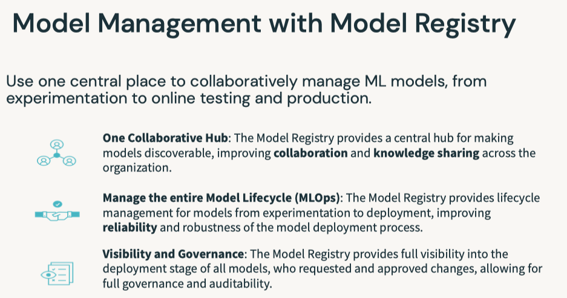
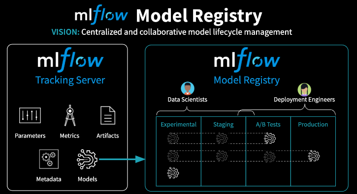
• Model registery workflow options– Central Model Registery → Dedicated workspace(s) to store models and experiments.* Refer to this documentation.* Pros:· Visibility into current state of all models· Central management of models· Cross cloud* Cons:· Setup is a bit complicted → * We need PAT & other configuration in a secret scope, * We can have max 100 secret scopes per workspace, * Using shared PATs isn't good from compliance point of view– Per-workspace Model Registeries → Each workspace has its own model registery, model transition is made via CI/CD.* Pros:· Narrowed access to staging/production workspace· PAT is required only for a system account (e.g., service principals)* Cons:· Limited observability → you need to visit staging/production workspaces to get information about model state· Approvals need to be done in relevant workspaces· There are no built-in tools for transitioning of models/experiments between workspaces, although there is some tooling.· Requires implementation as part of CI/CD pipeline
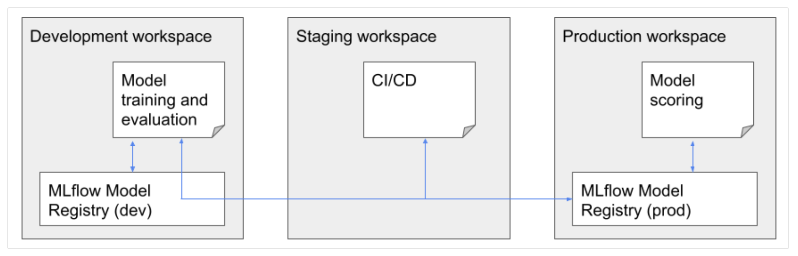
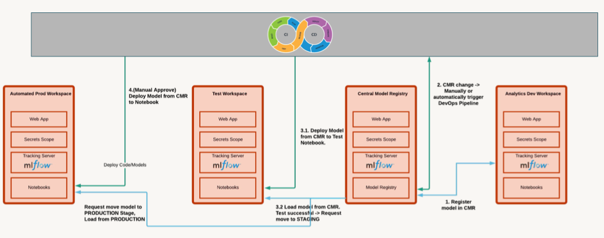
[Back To Top]5.1. Registering a Model• The following workflow will work with either the UI or in pure Python.– For the UI, look under the "Models" section from the sidebar. MLflow logs things like:* It logged who trained the model and what code was used* It logged a history of actions taken on this model* It logged this model as a first version (if it's first time registering)•
# Train a model and log it into MLflowimport mlflowimport mlflow.sklearnimport pandas as pdfrom sklearn.ensemble import RandomForestRegressorfrom sklearn.metrics import mean_squared_errorfrom sklearn.model_selection import train_test_splitfrom mlflow.models.signature import infer_signaturedf = pd.read_parquet(f"{DA.paths.datasets_path}/airbnb/sf-listings/airbnb-cleaned-mlflow.parquet")X_train, X_test, y_train, y_test = train_test_split(df.drop(["price"], axis=1), df["price"], random_state=42)n_estimators =100max_depth =5rf = RandomForestRegressor(n_estimators=n_estimators, max_depth=max_depth)rf.fit(X_train, y_train)input_example = X_train.head(3)signature = infer_signature(X_train, pd.DataFrame(y_train))with mlflow.start_run(run_name="RF Model")as run: mlflow.sklearn.log_model(rf,"model", input_example=input_example, signature=signature) mlflow.log_metric("mse", mean_squared_error(y_test, rf.predict(X_test))) mlflow.log_param("n_estimators", n_estimators) mlflow.log_param("max_depth", max_depth) run_id = run.info.run_id# Create a unique model name so you don't clash with other workspace users.suffix = DA.unique_name("-")model_name =f"airbnb-rf-model_{suffix}"# Register the modelmodel_uri =f"runs:/{run_id}/model"model_details = mlflow.register_model(model_uri=model_uri, name=model_name)
• After registering the model, initially the status is PENDING_REGISTRATION.• •
from mlflow.tracking.client import MlflowClientclient = MlflowClient()model_version_details = client.get_model_version(name=model_name, version=1)model_version_details.status# Add model descriptionclient.update_registered_model( name=model_details.name, description="This model forecasts Airbnb housing list prices based on various listing inputs.")# Add a version-specific descriptionclient.update_model_version( name=model_details.name, version=model_details.version, description="This model version was built using sklearn.")
[Back To Top]5.2. Deploying a Model• The MLflow Model Registry defines several model stages: – None– Staging – Production– Archived• Each stage has a unique meaning. – For example, Staging is meant for model testing, while Production is for models that have completed the testing or review processes and have been deployed to applications.• Users with appropriate permissions can transition models between stages. • • If you have permission to transition a model to a particular stage, you can make the transition directly by using the MlflowClient.update_model_version() function. • • If you do not have permission, you can request a stage transition using the REST API; for example: • •
%sh curl -i -X POST -H "X-Databricks-Org-Id: <YOUR_ORG_ID>" -H "Authorization: Bearer <YOUR_ACCESS_TOKEN>" https://<YOUR_DATABRICKS_WORKSPACE_URL>/api/2.0/preview/mlflow/transition-requests/create -d '{"comment": "Please move this model into production!", "model_version": {"version": 1, "registered_model": {"name": "power-forecasting-model"}}, "stage": "Production"}'
5.2.1. Transition a model to the Production stage•
client.transition_model_version_stage( name=model_details.name, version=model_details.version, stage="Production")# Fetch the model's current statusmodel_version_details = client.get_model_version( name=model_details.name, version=model_details.version,)print(f"The current model stage is: '{model_version_details.current_stage}'")# Fetch the latest model using a `pyfunc`. Loading the model in this way allows us to use the model regardless of the package that was used to train it. You can load a specific version of the model too.import mlflow.pyfuncmodel_version_uri =f"models:/{model_name}/1"print(f"Loading registered model version from URI: '{model_version_uri}'")model_version_1 = mlflow.pyfunc.load_model(model_version_uri)# Predictmodel_version_1.predict(X_test)
5.2.2. Deploying a New Model Version• The MLflow Model Registry enables you to create multiple model versions corresponding to a single registered model. • By performing stage transitions, you can seamlessly integrate new model versions into your staging or production environments.• Create a new model version and register that model when it's logged.•
n_estimators =300max_depth =10rf = RandomForestRegressor(n_estimators=n_estimators, max_depth=max_depth)rf.fit(X_train, y_train)input_example = X_train.head(3)signature = infer_signature(X_train, pd.DataFrame(y_train))with mlflow.start_run(run_name="RF Model")as run:# Specify the `registered_model_name` parameter of the `mlflow.sklearn.log_model()`# function to register the model with the MLflow Model Registry. This automatically# creates a new model version mlflow.sklearn.log_model( sk_model=rf, artifact_path="sklearn-model", registered_model_name=model_name, input_example=input_example, signature=signature) mlflow.log_metric("mse", mean_squared_error(y_test, rf.predict(X_test))) mlflow.log_param("n_estimators", n_estimators) mlflow.log_param("max_depth", max_depth) run_id = run.info.run_id
• Check the UI to see the new model version.
• Use the search functionality to grab the latest model version.•
model_version_infos = client.search_model_versions(f"name = '{model_name}'")new_model_version =max([model_version_info.version for model_version_info in model_version_infos])print(f"New model version: {new_model_version}")# Add a description to this new versionclient.update_model_version( name=model_name, version=new_model_version, description="This model version is a random forest containing 300 decision trees and a max depth of 10 that was trained in scikit-learn.")# Put this new model version into `Staging`time.sleep(10)# In case the registration is still pendingclient.transition_model_version_stage( name=model_name, version=new_model_version, stage="Staging")# Since this model is now in staging, you can execute an automated CI/CD pipeline against it to test it before going into production. Once that is completed, you can push that model into production.client.transition_model_version_stage( name=model_name, version=new_model_version, stage="Production", archive_existing_versions=True# Archive old versions of this model)# Deleting# We can now delete the older versions of the model# Note: You cannot delete a model before it's archivedclient.transition_model_version_stage( name=model_name, version=2, stage="Archived")client.delete_model_version( name=model_name, version=1)# Deleting the entire registered modelclient.delete_registered_model(model_name)
• Question: How does MLflow tracking differ from the model registry?– Answer: Tracking is meant for experimentation and development. The model registry is designed to take a model from tracking and put it through staging and into production. This is often the point that a data engineer or a machine learning engineer takes responsibility for the depoloyment process.• • Question: Why do I need a model registry?– Answer: Just as MLflow tracking provides end-to-end reproducibility for the machine learning training process, a model registry provides reproducibility and governance for the deployment process. Since production systems are mission critical, components can be isolated with ACL's so only specific individuals can alter production models. Version control and CI/CD workflow integration is also a critical dimension of deploying models into production.• • Question: What can I do programatically versus using the UI?– Answer: Most operations can be done using the UI or in pure Python. A model must be tracked using Python, but from that point on everything can be done either way. For instance, a model logged using the MLflow tracking API can then be registered using the UI and can then be pushed into production.[Back To Top]
6. Model Management - Webhooks and Testing• Webhookstrigger the execution of code (oftentimes tests) upon some event. 6.1. Automated Testing• The backbone of the continuous integration, continuous deployment (CI/CD) process is the automated building, testing, and deployment of code. • A webhook or trigger causes the execution of code based upon some event. – This is commonly when new code is pushed to a code repository. – In the case of machine learning jobs, this could be the arrival of a new model in the model registry.• The two types of MLflow Model Registry Webhooks:– Webhooks with Job triggers: Trigger a job in a Databricks workspace– Webhooks with HTTP endpoints: Send triggers to any HTTP endpoint• • This lesson uses:– A Job webhook to trigger the execution of a Databricks job.– A HTTP webhook to send notifications to Slack.• • Upon the arrival of a new model version with a given name in the model registry, the function of the Databricks job is to:– Import the new model version– Test the schema of its inputs and outputs– Pass example code through the model– • This covers many of the desired tests for ML models. – However, throughput testing could also be performed using this paradigm. – Also, the model could also be promoted to the production stage in an automated fashion.• Note: You need to install the webhook library before you can use it → pip install databricks-registry-webhooks[Back To Top]6.2. Implementation6.2.1. Creating a Model• We follow these steps to create a Databricks job:– Create a user access token1. Click the Settings icon2. Click User Settings3. Go to the Access Tokens tab4. Click the Generate New Token button5. Optionally enter a description (comment) and expiration period6. Click the Generate button7. Copy the generated token and use it in your code.7. – Note: Ensure that you are an admin on this workspace and that you're not using Community Edition (which has jobs disabled).* You can set:
* However, this is not a best practice. · We recommend you create your personal access token using the steps above and save it in your secret scope.– More details about access tokens here.– •
import mlflow# With the token, we can create our authorization header for our subsequent REST callsheaders ={"Authorization":f"Bearer {token}"}instance = mlflow.utils.databricks_utils.get_webapp_url()# Train and register a modelfrom mlflow.models.signature import infer_signaturefrom sklearn.metrics import mean_squared_errorimport mlflow.sklearnimport pandas as pdfrom sklearn.ensemble import RandomForestRegressorfrom sklearn.model_selection import train_test_splitwith mlflow.start_run(run_name="Webhook RF Experiment")as run:# Data prep df = pd.read_parquet(f"{DA.paths.datasets_path}/airbnb/sf-listings/airbnb-cleaned-mlflow.parquet") X_train, X_test, y_train, y_test = train_test_split(df.drop(["price"], axis=1), df["price"], random_state=42) signature = infer_signature(X_train, pd.DataFrame(y_train)) example = X_train.head(3)# Train and log model rf = RandomForestRegressor(random_state=42) rf.fit(X_train, y_train) mlflow.sklearn.log_model(rf,"random-forest-model", signature=signature, input_example=example) mse = mean_squared_error(y_test, rf.predict(X_test)) mlflow.log_metric("mse", mse) run_id = run.info.run_id experiment_id = run.info.experiment_idsuffix = DA.unique_name("-")name =f"webhook-demo_{suffix}"model_uri =f"runs:/{run_id}/random-forest-model"model_details = mlflow.register_model(model_uri=model_uri, name=name)
6.2.2. Creating a Job• There's a job notebook called → 03b-Webhooks-Job-Demo– You can access the jobs through the "Workflows" or "Job Runs" in the sidebar.– Click on the "Create Job" button to create and specify a new job (see below).
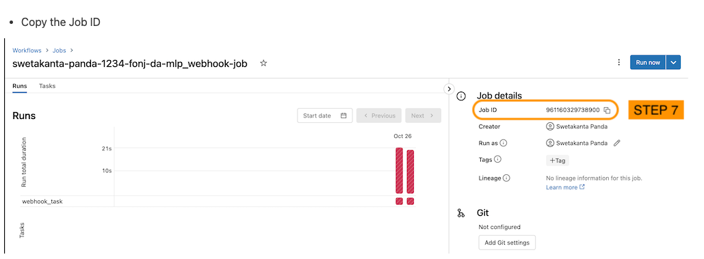
• Alternatively, the code below will programmatically create the job.•
import requestsdeffind_job_id(instance, headers, job_name, offset_limit=1000): params ={"offset":0} uri =f"{instance}/api/2.1/jobs/list" res = requests.get(uri, params=params, headers=headers)if res.status_code ==200: job_list = res.json().get("jobs",[])iflen(job_list)>0:return job_list[0]["job_id"]## return the first matching jobelse:Nonedefget_job_parameters(job_name, cluster_id, notebook_path): params ={"name": job_name,"tasks":[{"task_key":"webhook_task","existing_cluster_id": cluster_id,"notebook_task":{"notebook_path": notebook_path}}]}return paramsdefget_create_parameters(job_name, cluster_id, notebook_path): api ="api/2.1/jobs/create"return api, get_job_parameters(job_name, cluster_id, notebook_path)defget_reset_parameters(job_name, cluster_id, notebook_path, job_id): api ="api/2.1/jobs/reset" params ={"job_id": job_id,"new_settings": get_job_parameters(job_name, cluster_id, notebook_path)}return api, paramsdefget_webhook_job(instance, headers, job_name, cluster_id, notebook_path): job_id = find_job_id(instance, headers, job_name)if job_id isNone: api, params = get_create_parameters(job_name, cluster_id, notebook_path)else: api, params = get_reset_parameters(job_name, cluster_id, notebook_path, job_id) uri =f"{instance}/{api}" res = requests.post(uri, headers=headers, json=params)assert res.status_code ==200,f"Expected an HTTP 200 response, received {res.status_code}; {res.content}" job_id = res.json().get("job_id", job_id)return job_idnotebook_path = mlflow.utils.databricks_utils.get_notebook_path().replace("03a-Webhooks-and-Testing","03b-Webhooks-Job-Demo")# We can use our utility method for creating a unique # database name to help us construct a unique job name.prefix = DA.unique_name("-")job_name =f"{prefix}_webhook-job"# if the Job was created via UI, set it here.job_id = get_webhook_job(instance, headers, job_name, spark.conf.get("spark.databricks.clusterUsageTags.clusterId"), notebook_path)print(f"Job ID: {job_id}")print(f"Job name: {job_name}")
6.2.3. Review the Job Code• In this section, we review the codes in the Databricks job notebook for this demo.• The job notebook is intended to be run as a job called by a webhook and therefore receiving an input parameter.1. Load the model name. The event_message is automatically populated by the webhook.1.
5. 6. Load the dataset and generate some predictions to ensure our model is working correctly.6.
import pandas as pddf = pd.read_parquet(f"{DA.paths.datasets_path}/airbnb/sf-listings/airbnb-cleaned-mlflow.parquet")predictions = pyfunc_model.predict(df)predictions
6. 7. Make sure our prediction types are correct.7.
import numpy as npasserttype(predictions)== np.ndarrayasserttype(predictions[0])== np.float64print("All tests passed!")
6.2.4. Create a Job Webhook• There are a few different events that can trigger a Webhook. Here, we will be experimenting with triggering a job when our model transitions between stages.• •
# Get it from the Workflow's jobs UIjob_id ='166193863379691'from databricks_registry_webhooks import RegistryWebhooksClient, JobSpec job_spec = JobSpec( job_id=job_id, workspace_url=instance, access_token=token )job_webhook = RegistryWebhooksClient().create_webhook( model_name=name, events=["MODEL_VERSION_TRANSITIONED_STAGE"], job_spec=job_spec, description="Job webhook trigger", status="ACTIVE")
• Now that we have registered the webhook, we can test it by transitioning our model from stage None to Staging in the Experiment UI. We should see in the Jobs tab that our Job has run.• To get the active Webhook related to our model, use list_webhooks and specify the model_name.• •
• Delete the webhook by copying the webhook ID to the curl or python request. You can confirm that the Webhook was deleted by using the list request.• •
http_webhook = RegistryWebhooksClient().delete_webhook(id="<insert your webhook id here>")webhooks_list = RegistryWebhooksClient().list_webhooks(model_name=name)print(webhooks_list)
7. Deployment7.1. Deployment Patterns• Data Science != ML Engineering• Data science is scientific – Business problems → data problems – Model mathematically – Optimize performance• ML engineers are concerned with – Reliability – Scalability – Maintainability – SLAs – ...
[Back To Top]7.3. Batch Deployment• Batch inference is the most common way of deploying machine learning models.7.3.1. Inference in Batch• Batch deployment represents the vast majority of use cases for deploying machine learning models.– This normally means running the predictions from a model and saving them somewhere for later use.– For live serving, results are often saved to a database that will serve the saved prediction quickly.– In other cases, such as populating emails, they can be stored in less performant data stores such as a blob store.• Writing the results of an inference can be optimized in a number of ways...– For large amounts of data, predictions and writes should be performed in parallel.– The access pattern for the saved predictions should also be kept in mind in how the data is written.* For static files or data warehouses, partitioning speeds up data reads.* For databases, indexing the database on the relevant query generally improves performance.* In either case, the index is working similar to an index in a book: it allows you to skip ahead to the relevant content.• There are a few other considerations to ensure the accuracy of a model...– First is to make sure that the model matches expectations.* → Model drift– Second is to retrain the model on the majority of your dataset.* Either use the entire dataset for training or around 95% of it.* A train/test split is a good method in tuning hyperparameters and estimating how the model will perform on unseen data.* Retraining the model on the majority of the dataset ensures that you have as much information as possible factored into the model.* It is common to skip the train/test split in training a final model.7.3.2. Inference in Spark• Models trained in various machine learning libraries can be applied at scale using Spark. • To do this, use mlflow.pyfunc.spark_udf and pass in the SparkSession, name of the model, and run id.• Using UDF's in Spark means that supporting libraries must be installed on every node in the cluster. – In the case of sklearn, this is installed in Databricks clusters by default. – When using other libraries, you will need to install them to ensure that they will work as UDFs.• Let's start by training an sklearn model and apply it using Spark UDF generated by mlflow.• •
import pandas as pddf = pd.read_parquet(f"{DA.paths.datasets_path}/airbnb/sf-listings/airbnb-cleaned-mlflow.parquet")X = df.drop(["price"], axis=1)y = df["price"]# Train and log the modelfrom sklearn.ensemble import RandomForestRegressorfrom sklearn.metrics import mean_squared_errorimport mlflow.sklearnwith mlflow.start_run(run_name="Final RF Model")as run: rf = RandomForestRegressor(n_estimators=100, max_depth=5) rf.fit(X, y) predictions = rf.predict(X) mlflow.sklearn.log_model(rf,"random_forest_model") mse = mean_squared_error(y, predictions)# This is on the same data the model was trained mlflow.log_metric("mse", mse)# Create Spakr DataFramespark_df = spark.createDataFrame(X)# MLflow easily produces a Spark user defined function (UDF). This bridges the gap between Python environments and applying models at scale using Spark.predict = mlflow.pyfunc.spark_udf(spark,f"runs:/{run.info.run_id}/random_forest_model")# Apply the model as a standard UDF using the column names as the input to the function.prediction_df = spark_df.withColumn("prediction", predict(*spark_df.columns))
7.3.3. Write Optimizers• There are many possible optimizations depending on your batch deployment scenerio. • • In Spark and Delta Lake, the following optimizations are possible:– Partitioning: stores data associated with different categorical values in different directories.– Z-Ordering: colocates related information in the same set of files.– Data Skipping: aims at speeding up queries that contain filters (WHERE clauses).– Partition Pruning: speeds up queries by limiting the amount of data read.• • Other optimizations include:– Database indexing: allows certain table columns to be more effectively queried.– Geo-replication: replicates data in different geographical regions.•
# Partition by neighborhooddbutils.fs.rm(f"{DA.paths.working_dir}/batch-predictions-partitioned.delta", recurse=True)delta_partitioned_path =f"{DA.paths.working_dir}/batch-predictions-partitioned.delta"prediction_df.write.partitionBy("neighbourhood_cleansed").mode("OVERWRITE").format("delta").save(delta_partitioned_path)# Take a look at the filesdisplay(dbutils.fs.ls(delta_partitioned_path))# Z-Ordering is a form of multi-dimensional clustering that colocates related information in the same set of files. It reduces the amount of data that needs to be read. You can read more about it here -> "https://docs.databricks.com/delta/optimizations/file-mgmt.html#z-ordering-multi-dimensional-clustering". # Let's z-order by zipcode.spark.sql(f"OPTIMIZE delta.`{delta_partitioned_path}` ZORDER BY (zipcode)")
7.3.4. Feature Store Batch Scoring•
# Create feature table# Read dataframe from the csv file with spark directly to track data source in Feature Storefrom databricks import feature_storefrom databricks.feature_store import feature_table,FeatureLookup## create a feature store clientfs = feature_store.FeatureStoreClient()from pyspark.sql.functions import monotonically_increasing_id## build feature dataframe, add index column and drop labeldf =(spark.read.csv(f"{DA.paths.datasets}/airbnb/sf-listings/airbnb-cleaned-mlflow.csv", header=True, inferSchema=True).withColumn("index", monotonically_increasing_id()))## feature data - all the columns except for the true labelfeatures_df = df.drop("price")## inference data - contains only index and label columns, if you have online features, it should be added to inference_df as wellinference_df = df.select("index","price")# Declare a fully-qualified, unique table name.# In DBR 10.5+, we can drop Feature Store tables, but for now we need a uniuqe name in case we re-run this notebook.feature_table_name =f"{DA.schema_name}.airbnb_fs"print(f"Table: {feature_table_name}\n")# create feature tableresult = fs.create_table( name=feature_table_name, primary_keys=["index"], df=features_df, description="review cols of Airbnb data")# Create training set from feature store using fs.create_training_set## FeatureLoopup object#feature_lookups = [FeatureLookup(feature_table_name, f, "index") for f in features_df.columns if f!="index"] ## exclude index colum## uncomment the command below to create lookup features if using Runtime 9.1 MLfeature_lookups =[FeatureLookup(table_name = feature_table_name, feature_names =None, lookup_key ="index")]## fs.create_training_set will look up features in model_feature_lookups with matched key from inference_data_dftraining_set = fs.create_training_set(inference_df, feature_lookups, label="price", exclude_columns="index")# Log a feature store packaged model.# We need a unique model name and we can use our unique database name to construct it.suffix = DA.unique_name("-")model_name =f"airbnb-fs-model_{suffix}"print(f"Model Name: {model_name}")from mlflow.models.signature import infer_signature## log RF model as a feature store packaged model and register the packaged model in model registry as `model_name`fs.log_model( model=rf, artifact_path="feature_store_model", flavor=mlflow.sklearn, training_set=training_set, registered_model_name=model_name, input_example=X[:5], signature=infer_signature(X, y))
• View the model in the Model Registry UI.
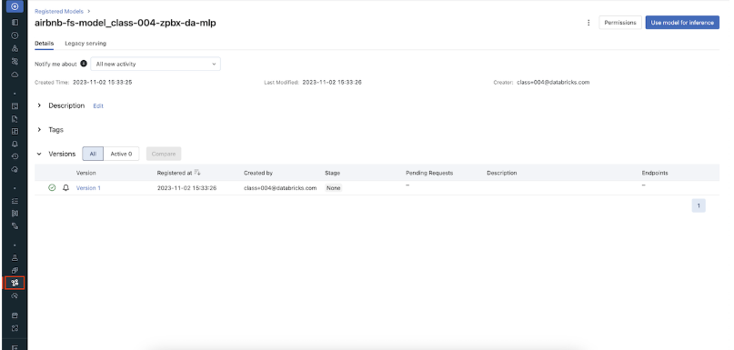
• You can also find the registered model on the Feature Store UI.
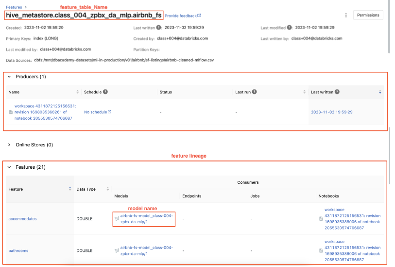
• Let's now perform batch scoring with the feature store model.• •
## for simplicity sake, we will just predict on the same inference_data_dfbatch_input_df = inference_df.drop("price")#exclude true labelwith_predictions = fs.score_batch(f"models:/{model_name}/1", batch_input_df, result_type='double')display(with_predictions)
• Question: What are the main considerations in batch deployments?– Answer: The following considerations help determine the best way to deploy batch inference results:* How the data will be queried* How the data will be written* The training and deployment environment* What data the final model is trained on* • Question: How can you optimize inference reads and writes?– Answer: Writes can be optimized by managing parallelism. In Spark, this would mean managing the partitions of a DataFrame such that work is evenly distributed and you have the most efficient connections back to the target database.[Back To Top]7.4. Real-Time Deployment• While real time deployment represents a smaller share of the deployment landscape, many of these deployments represent high value tasks.• Note: You need cluster creation permissions to create a model serving endpoint.7.4.1. Real-Time Inference• Real time inference is...– Generating predictions for a small number of records with fast results (e.g. results in milliseconds)– The first question to ask when considering real time deployment is: do I need it?* It represents a minority of machine learning inference use cases — it's necessary when features are only available at the time of serving.* Is one of the more complicated ways of deploying models.* That being said, domains where real time deployment is often needed are often of great business value.• • Domains needing real time deployment include...– Financial services (especially with fraud detection)– Mobile– Ad tech• There are a number of ways of deploying models...– Many use REST– For basic prototypes, MLflow can act as a development deployment server.* The MLflow implementation is backed by the Python library Flask.* This is not intended for production environments.– • In addition, Databricks offers a managed MLflow Model Serving solution. – This solution allows you to host machine learning models from Model Registry as REST endpoints that are automatically updated based on the availability of model versions and their stages.• • For production RESTful deployment, there are two main options...– A managed solution* Azure ML* SageMaker (AWS)* VertexAI (GCP)– A custom solution* Involve deployments using a range of tools* Often using Docker or Kubernetes– One of the crucial elements of deployment in containerization* Software is packaged and isolated with its own application, tools, and libraries.* Containers are a more lightweight alternative to virtual machines.– • Finally, embedded solutions are another way of deploying machine learning models, such as storing a model on IoT devices for inference.•
import mlflowimport mlflow.pyfuncfrom mlflow.models.signature import infer_signatureimport pandas as pdclassTestModel(mlflow.pyfunc.PythonModel):defpredict(self, context, input_df):return5model_run_name="pyfunc-model"with mlflow.start_run()as run: model = TestModel() mlflow.pyfunc.log_model(artifact_path=model_run_name, python_model=model) model_uri =f"runs:/{run.info.run_id}/{model_run_name}"
• There are a few ways to send requests to the development server for testing purpose:– Using click library– using MLflow Model Serving API– through CLI using mlflow models serve– • Here, we are going to see how to use both the click library and MLflow Model Serving API.• • Note: This is just to demonstrate how a basic development server works. – This design pattern (which hosts a server on the driver of your Spark cluster) is not recommended for production.• Models can be served in this way in other languages as well.[Back To Top]7.4.2. Method 1: Using click Library•
import timefrom multiprocessing import Processserver_port_number =6501host_name ="127.0.0.1"defrun_server():try:import mlflow.models.clifrom click.testing import CliRunner CliRunner().invoke(mlflow.models.cli.commands,["serve","--model-uri", model_uri,"-p", server_port_number,"-w",4,"--host", host_name,# "127.0.0.1", "--no-conda"])except Exception as e:print(e)p = Process(target=run_server)# Create a background processp.start()# Start the processtime.sleep(5)# Give it 5 seconds to startupprint(p)# Print its status to ensure it's runnning# Create an input for our REST inputimport jsoninput_json0 ={"dataframe_split":{"index":[0],"columns":[0],"data":[[0]]}}input_json = json.dumps(input_json0, indent=4)print(input_json)# Perform a POST request against the endpointimport requestsfrom requests.exceptions import ConnectionErrorfrom time import sleepheaders ={"Content-type":"application/json"}url =f"http://{host_name}:{server_port_number}/invocations"try: response = requests.post(url=url, headers=headers, data=input_json)except ConnectionError:print("Connection fails on a Run All. Sleeping and will try again momentarily...") sleep(5) response = requests.post(url=url, headers=headers, data=input_json)print(f"Status: {response.status_code}")print(f"Value: {response.text}")
[Back To Top]7.4.3. Method 2: MLflow Model Serving• Step 1 → We first need to register the model in MLflow Model Registry and load the model. At this step, we don't specify the model stage, so that the stage version would be None.– You can refer to the MLflow documentation here.– •
time.sleep(10)# to wait for registration to completemodel_version_uri =f"models:/{model_name}/1"print(f"Loading registered model version from URI: '{model_version_uri}'")model_version_1 = mlflow.pyfunc.load_model(model_version_uri)
• Enable model inference via API call:– After calling log_model, a new version of the model is saved. To provision a serving endpoint, follow the steps below.1. Click Serving in the left sidebar. If you don't see it, switch to the Machine Learning Persona (AWS|Azure).2. Enable serving for your model. See the Databricks documentation for details (AWS|Azure).– The code below automatically creates a model serving endpoint.•
from mlflow.tracking.client import MlflowClientmodel_serving_endpoint_name ="endpoint-"+ model_name # Provide both a token for the API, which can be obtained from the notebook.token = dbutils.notebook.entry_point.getDbutils().notebook().getContext().apiToken().getOrElse(None)# With the token, we can create our authorization header for our subsequent REST callsheaders ={"Authorization":f"Bearer {token}","Content-Type":"application/json"}workspace_domain = sc.getConf().get("spark.databricks.workspaceUrl")api_url =f"https://{workspace_domain}/api/2.0/serving-endpoints"print(f"API URL: {api_url}")defget_latest_model_version(model_name:str): client = MlflowClient() models = client.get_latest_versions(model_name, stages=["None"])for m in models: new_model_version = m.versionreturn new_model_version
• Set up configurations for Serverless model serving endpoint:– Create the serving endpooint if it does not exist yet.– Or update the configuration of the model serving endpoint if it already exists.• It may take a couple of minutes doe the endpoint and model to be ready.– •
my_json ={"name": model_serving_endpoint_name,"config":{"served_models":[{"model_name": model_name,"model_version": get_latest_model_version(model_name=model_name),"workload_size":"Small","scale_to_zero_enabled":True}]}}defcreate_endpoint(model_serving_endpoint_name):# get endpoint status r = requests.get(f"{api_url}/{model_serving_endpoint_name}", headers=headers)if"RESOURCE_DOES_NOT_EXIST"in r.text:print(f"Creating this new endpoint: {api_url}/{model_serving_endpoint_name}/invocations") re = requests.post(api_url, headers=headers, json=my_json)else: new_model_version =(my_json['config'])['served_models'][0]['model_version']print(f"This endpoint existed previously! We are updating it to a new config with a new model version: {new_model_version}")# update config re = requests.put(f"{api_url}/{model_serving_endpoint_name}/config", headers=headers, json=my_json['config'])# wait until new config file in place retry =True total_wait =0while retry: r = requests.get(f"{api_url}/{model_serving_endpoint_name}", headers=headers)assert r.status_code ==200,f"Expected an HTTP 200 response when accessing endpoint info, received {r.status_code}" endpoint = json.loads(r.text)if"pending_config"in endpoint.keys(): seconds =10print("\nNew config still pending")if total_wait <6000:#if less than 10 mins, keep waitingprint(f"Wait for {seconds} seconds")print(f"Total waiting time so far: {total_wait} seconds") time.sleep(seconds) total_wait += secondselse:print(f"Stopping, waited for {total_wait} seconds") retry =Falseelse:print("New config in place now!") retry =Falseassert re.status_code ==200,f"Expected an HTTP 200 response, received {re.status_code}"create_endpoint(model_serving_endpoint_name)
• Define a wait_for_endpoint() function.• •
defwait_for_endpoint():whileTrue: response = requests.get(f"{api_url}/{model_serving_endpoint_name}", headers=headers)assert response.status_code ==200,f"Expected an HTTP 200 response, received {response.status_code}\n{response.text}" status = response.json().get("state",{}).get("ready",{})if status =="READY":print(status,"-"*80)returnelse:print(f"Endpoint not ready ({status}), waiting 10 seconds") time.sleep(10)# Wait 10 secondswait_for_endpoint()# Give the system just a couple extra seconds to transitiontime.sleep(5)
• Define the score_model() function.• •
defscore_model(dataset: pd.DataFrame, timeout_sec=300): start =int(time.time()) serving_url =f"https://{workspace_domain}/serving-endpoints/{model_serving_endpoint_name}/invocations"print(f"Scoring {model_name} at {serving_url}") data_json ={"dataframe_split": dataset.to_dict(orient="split")}whileTrue: response = requests.request(method="POST", headers=headers, url=serving_url, json=data_json) elapsed =int(time.time())- startif response.status_code ==200:return response.json()elif elapsed > timeout_sec:raise Exception(f"Endpoint was not ready after {timeout_sec} seconds")elif response.status_code in[404,503]:print("Temporarily unavailable, retry in 5") time.sleep(5)else:raise Exception(f"Request failed with status {response.status_code}, {response.text}")
• Now that the model serving cluster is in the ready state, you can send requests to the REST endpoint.• •
• Once your serving endpoint is ready, score_model should give you the model inference result.• OPTIONAL: To visualize the UI for model serving or to manually create a model serving endpoint, click the Serving tab on the navbar.
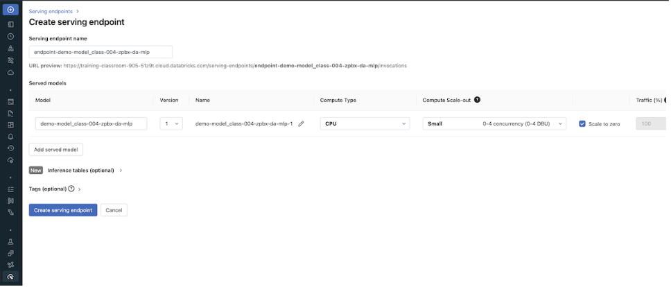
• Then select the model to enable model serving or to check the status of model serving.
• Use "Query endpoint" to manually input the payload_json and check the inference result.
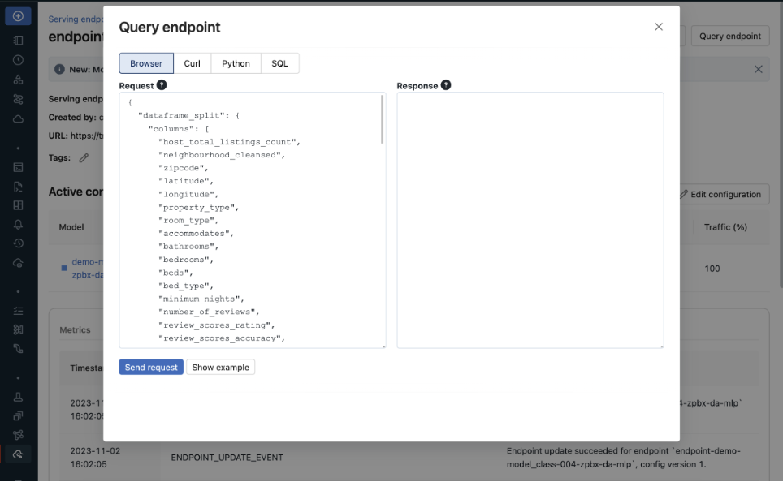
•
# Helper code to delete infrastructuredefdelete_model_serving_endpoint(model_serving_endpoint_name): response = requests.delete(f"{api_url}/{model_serving_endpoint_name}", headers=headers)if response.status_code !=200:raise Exception(f"Request failed with status {response.status_code}, {response.text}")else:print(model_serving_endpoint_name,"endpoint is deleted!")delete_model_serving_endpoint(model_serving_endpoint_name)
[Back To Top]7.4.4. AWS SageMaker• mlflow.sagemaker can deploy a trained model to SageMaker using a single function: mlflow.sagemaker.deploy• During deployment, MLflow will use a specialized Docker container with the resources required to load and serve the model. This container is named mlflow-pyfunc.• By default, MLflow will search for this container within your AWS Elastic Container Registry (ECR). • You can build and upload this container to ECR using the mlflow sagemaker build-and-push-container function in MLflow's CLI. • Alternatively, you can specify an alternative URL for this container by setting an environment variable as follows:• •
# the ECR URL should look like:{account_id}.dkr.ecr.{region}.amazonaws.com/{repo_name}:{tag} image_ecr_url ="<ecr-url>"# Set the environment variable based on the URL os.environ["SAGEMAKER_DEPLOY_IMG_URL"]= image_ecr_url# Deploy the model mlflow.sagemaker.deploy( app_name,# application/model name model_uri,# model URI in Model Registry image_url=image_ecr_url, region_name=region, mode="create"))
• Running deployment and inference in a Databricks notebook requires the Databricks cluster to be configured with an AWS IAM role with permissions to perform these operations.• Once the endpoint is up and running, the sagemaker-runtime API in boto3 can query against the REST API:• •
• Tip: Each Sagemaker endpoint is scoped to a single region. If deployment is required across regions, Sagemaker endpoints must exist in each region.7.4.5. Online Feature Store Real-Time Model Serving• You can also work with online feature stores for real-time serving of feature values. • With real-time serving, you publish feature tables to a low-latency database and deploy the model to a REST endpoint. • Databricks Feature Store also supports automatic feature lookup. Please refer to the example notebooks below:– AWS version (at the end of the page) here.– Azure version here.• Question: What are the best tools for real time deployment?– Answer: This depends largely on the desired features. The main tools to consider are a way to containerize code and either a REST endpoint or an embedded model. This covers the vast majority of real time deployment options.• • Question: What are the best options for RESTful services?– Answer: The major cloud providers all have their respective deployment options. In the Azure environment, Azure ML manages deployments using Docker images. This provides a REST endpoint that can be queried by various elements of your infrastructure.• • Question: What factors influence REST deployment latency?– Answer: Response time is a function of a few factors. Batch predictions should be used when needed since it improves throughput by lowering the overhead of the REST connection. Geo-location is also an issue, as is server load. This can be handled by geo-located deployments and load balancing with more resources.[Back To Top]
[Back To Top]• MLOps– Continuous Integration (CI) extends the testing and validating code and components by adding testing and validating data and models.– Continuous Delivery (CD) concerns with delivery of an ML training pipeline that automatically deploys another the ML model prediction service.• Continuous Training (CT) automatically retrains ML models for redeployment.– Continuous Monitoring (CM) concerns with monitoring production data and model performance metrics, which are bound to business metrics.
[Back To Top]8.2.1. Drift Monitoring• Monitoring models over time entails safeguarding against drift in model performance as well as breaking changes.• The majority of machine learning solutions assume that data is generated according to a stationary probability distribution. • However, because most datasets involving human activity change over time, machine learning solutions often go stale.– For example, a model trained to predict restaurant sales before the COVID-19 pandemic would likely not be an accurate model of restaurant sales during the pandemic. The distribution generating the data changed, or drifted, over time.• • Drift is composed of number of different types:– Data Drift* Data Changes· In practice, upstream data changes is one of the most common sources of drift· For instance, null records from a changed ETL task– Feature Drift* Change in the distribution of an input feature(s)* Change in P(X)– Label Drift* Change in the distribution of the label in the data* Change in P(Y)– Prediction Drift* Change in the distribution of the predicted label given by the model* Change in P(Y|X)– Concept Drift* Change in the relationship between input variables and label* Change in distribution of P(Y|X)* Likely results in an invalid current model* • A rigorous monitoring solution for drift entails monitoring each cause of drift.• Note: It is important to note that each situation will need to be handled differently and that the presence of drift does not immediately indicate a need to replace the current model.• For example:– Imagine a model designed to predict snow cone sales with temperature as an input variable. – If more recent data has higher temperatures and higher snow cone sales, we have both feature and label drift, but as long as the model is performing well, then there is not an issue.– However, we might still want to take other business action given the change, so it is important to monitor for this anyway.– However, if temperature rose and sales increased, but our predictions did not match this change, we could have concept drift and will need to retrain the model.– In either case, we may want to alert the company of the changes in case they impact other business processes, so it is important to track all potential drift.• • In order to best adapt to possible changes, we compare data and predictions across time windows to identify any kind of drift that could be occuring.• The essence of drift monitoring is running statistical tests on time windows of data. This allows us to detect drift and localize it to specific root causes. • • Here are some solutions:– Numeric Features* Summary Statisitcs· Mean, Median, Variance, Missing value count, Max, Min* Tests· Jensen-Shannon → This method provides a smoothed and normalized metric· Two-Sample Kolmogorov-Smirnov (KS), Mann-Whitney, or Wilcoxon tests.Note: These tests vary largely in their assumption of normalcy and ability to handle larger data sizes. Do a check of normalcy and choose the appropriate test based on this (e.g. Mann-Whitney is more permissive of skew)· Wasserstein Distance· Kullback–Leibler divergence → This is related to Jensen-Shannon divergence– Categorical Features* Summary Statistics· Mode, Number of unique values, Number of missing values* Tests· One-way Chi-Squared Test· Chi-Squared Contingency Test· Fisher's Exact Test• • We also might want to store the relationship between the input variables and label. – In that case, we handle this differently depending on the label variable type.– Numeric Comparisons* Pearson Coefficient– Categorical Comparisons* Contingency Tables* • One interesting alternative is to frame monitoring as a supervised learning problem where you use your features and label as inputs to a model and your label is whether a given row comes from the training or inference set. As the model's accuracy improves, it would imply that the model as drifted.[Back To Top]8.2.2. Drift Monitoring - Implementation - Kolmogorov-Smirnov Test• Use the Two-Sample Kolmogorov-Smirnov (KS) Test for numeric features. – This test determines whether or not two different samples come from the same distribution. – This test:* Returns a higher KS statistic when there is a higher probability of having two different distributions.* Returns a lower p-value the higher the statistical significance.* • In practice, we need a thershold for the p-value, where we will consider it unlikely enough that the samples did not come from the same distribution. Usually this threshold, or alpha level, is 0.05.•
import seaborn as snsfrom scipy.stats import gaussian_kde, truncnormimport numpy as npimport matplotlib.pyplot as pltimport numpy as npimport pandas as pdfrom scipy import statsfrom scipy.spatial import distancedefplot_distribution(distibution_1, distibution_2):""" Plots the two given distributions :param distribution_1: rv_continuous :param distribution_2: rv_continuous """ sns.kdeplot(distibution_1, shade=True, color="g", label=1) sns.kdeplot(distibution_2, shade=True, color="b", label=2) plt.legend(loc="upper right", borderaxespad=0)defget_truncated_normal(mean=0, sd=1, low=0.2, upp=0.8, n_size=1000, seed=999):""" Generates truncated normal distribution based on given mean, standard deviation, lower bound, upper bound and sample size :param mean: float, mean used to create the distribution :param sd: float, standard deviation used to create distribution :param low: float, lower bound used to create the distribution :param upp: float, upper bound used to create the distribution :param n_size: integer, desired sample size :return distb: rv_continuous """ np.random.seed(seed=seed) a =(low-mean)/ sd b =(upp-mean)/ sd distb = truncnorm(a, b, loc=mean, scale=sd).rvs(n_size, random_state=seed)return distbdefcalculate_ks(distibution_1, distibution_2):""" Helper function that calculated the KS stat and plots the two distributions used in the calculation :param distribution_1: rv_continuous :param distribution_2: rv_continuous :return p_value: float, resulting p-value from KS calculation :return ks_drift: bool, detection of significant difference across the distributions """ base, comp = distibution_1, distibution_2 p_value = np.round(stats.ks_2samp(base, comp)[1],3) ks_drift = p_value <0.05# Generate plots plot_distribution(base, comp) label =f"KS Stat suggests model drift: {ks_drift} \n P-value = {p_value}" plt.title(label, loc="center")return p_value, ks_driftdefcalculate_probability_vector(distibution_1, distibution_2):""" Helper function that turns raw values into a probability vector :param distribution_1: rv_continuous :param distribution_2: rv_continuous :return p: array, probability vector of distribution_1 :return q: array, probability vector of distribution_2 """ global_min =min(min(distibution_1),min(distibution_2)) global_max =max(max(distibution_1),max(distibution_2)) p = np.histogram(distibution_1, bins=20,range=(global_min, global_max)) q = np.histogram(distibution_2, bins=20,range=(global_min, global_max))return p[0], q[0]defcalculate_js_distance(p, q, raw_distribution_1, raw_distribution_2, threshold=0.2):""" Helper function that calculated the JS distance and plots the two distributions used in the calculation :param p: array, probability vector for the first distribution :param q: array, probability vector for the second distribution :param raw_distribution_1: array, raw values used in plotting :param raw_distribution_2: array, raw values used in plotting :param threshold: float, cutoff threshold for the JS statistic :return js_stat: float, resulting distance measure from JS calculation :return js_drift: bool, detection of significant difference across the distributions """ js_stat = distance.jensenshannon(p, q, base=2) js_stat_rounded = np.round(js_stat,3) js_drift = js_stat > threshold# Generate plot plot_distribution(raw_distribution_1, raw_distribution_2) label =f"Jensen Shannon suggests model drift: {js_drift} \n JS Distance = {js_stat_rounded}" plt.title(label, loc="center")return js_stat, js_drift
• Great! We can see the distributions look pretty similar and we have a high p-value. Now, let's increase the sample size and see its impact on the p-value...Let's set N = 1,000.• Wow! Increasing the sample size decreased the p-value significantly. Let's bump up the sample size by one more factor of 10: N = 100,000.• • With the increased sample size, our ks_stat has dropped to near zero indicating that our two samples are significantly different. – However, by just visually looking at the plot of our two overlapping distributions, they look pretty similar. – Caculating the ks_stat can be useful when determining the similarity between two distributions, however you can quickly run into limitations based on sample size. – So how can we test for distribution similarity when we have a large sample size?[Back To Top]8.2.3. Drift Monitoring - Implementation - Jensen Shannon• Jensen Shannon (JS) distance is more appropriate for drift detection on a large dataset since it meaures the distance between two probability distributions and it is smoothed and normalized. • When log base 2 is used for the distance calculation, the JS statistic is bounded between 0 and 1:– 0 means the distributions are identical– 1 means the distributions have no similarity• The JS distance is defined as the square root of the JS divergence:• JSD(P||Q)=1
2D(P||M)+1
2D(Q||M)JSD(P||Q)=H(P+Q
2)-H(P)+H(Q)
2• Where M is defined as the pointwise mean of P and Q and H(P) is defined as the entropy function:• H(X)=-∑x∈𝓧P(x)logbP(x)• Unlike the KS statistic that provides a p-value, the JS statistic only provides a scalar value. – You therefore need to manually provide a cutoff threshold above which you will count the two datasets as having drifted.• Verify a JS statistic of 0 with two identical distributions. Note that the p and q arguments here are probability vectors, not raw values.• •
• As illustrated above, the JS distance is much more resilient to increased sample size because it is smoothed and normalized.• In practice, you would have data over a period of time, divide it into groups based on time (e.g. weekly windows), and then run the tests on the two groups to determine if there was a statistically significant change. – The frequency of these monitoring jobs depends on the training window, inference data sample size, and use case. We'll simulate this with our dataset.– •
# Load Datasetairbnb_pdf = pd.read_parquet(f"{DA.paths.datasets_path}/airbnb/sf-listings/airbnb-cleaned-mlflow.parquet/")# Identify Numeric & Categorical Columnsnum_cols =["accommodates","bedrooms","beds","minimum_nights","number_of_reviews","review_scores_rating","price"]cat_cols =["neighbourhood_cleansed","property_type","room_type"]# Drop extraneous columns for this exampleairbnb_pdf = airbnb_pdf[num_cols + cat_cols]# Split Dataset into the two groupspdf1 = airbnb_pdf.sample(frac =0.5, random_state=1)pdf2 = airbnb_pdf.drop(pdf1.index)
• Alter pdf2 to simulate drift. Add the following realistic changes:– The demand for Airbnbs skyrocketed, so the prices of Airbnbs doubled.* Type of Drift → Concept, Label– An upstream data management error resulted in null values forneighbourhood_cleansed* Type of Drift → Feature– An upstream data change resulted in review_score_rating move to a 5 star rating system, instead of the previous 100 point system.* Type of Drift → Feature•
pdf2["price"]=2* pdf2["price"]pdf2["review_scores_rating"]= pdf2["review_scores_rating"]/20pdf2["neighbourhood_cleansed"]= pdf2["neighbourhood_cleansed"].map(lambda x:Noneif x ==0else x)
[Back To Top]8.2.4. Drift Monitoring - Implementation - Apply Summary Stats• Start by looking at the summary statistics for the distribution of data in the two datasets with dbutils.data.summarize.• •
• It might be difficult to spot the differences in distribution across the summary plots, so let's visualize the percent change in summary statistics.• •
[Back To Top]8.2.5. Drift Monitoring - Implementation - Bonferroni Correction• The review_scores_rating and price seem to have many of their stats changed significantly, so we would want to look into those. • Now run the KS test on the two subsets of the data. • However, we cannot use the default alpha level of 0.05 in this situation because we are running a group of tests. – This is because the probability of at least one false positive (concluding the feature's distribution changed when it did not) in a group of tests increases with the number of tests in the group.• To solve this problem we will employ the Bonferroni Correction. – This changes the alpha level to 0.05 / number of tests in group. – It is common practice and reduces the probability of false positives.– More information can be found here.– •
# Set the Bonferroni Corrected alpha levelalpha =0.05alpha_corrected = alpha /len(num_cols)# Loop over all numeric attributes (numeric cols and target col, price)for num in num_cols:# Run test comparing old and new for that attribute ks_stat, ks_pval = stats.ks_2samp(pdf1[num], pdf2[num], mode="asymp")if ks_pval <= alpha_corrected:print(f"{num} had statistically significant change between the two samples")# review_scores_rating had statistically significant change between the two samples# price had statistically significant change between the two samples
• As mentioned above, the Jensen Shannon Distance metric has some advantages over the KS distance, so let's also run that test as well.• Because we do not have p-value we do not need the Bonferroni Correction, however we do need to manually set a threshold based on our knowledge of the dataset.•
# Set the JS stat thresholdthreshold =0.2# Loop over all numeric attributes (numeric cols and target col, price)for num in num_cols:# Run test comparing old and new for that attribute range_min =min(pdf1[num].min(), pdf2[num].min()) range_max =max(pdf1[num].max(), pdf2[num].max()) base = np.histogram(pdf1[num], bins=20,range=(range_min, range_max)) comp = np.histogram(pdf2[num], bins=20,range=(range_min, range_max)) js_stat = distance.jensenshannon(base[0], comp[0], base=2)if js_stat >= threshold:print(f"{num} had statistically significant change between the two samples")# review_scores_rating had statistically significant change between the two samples# price had statistically significant change between the two samples
[Back To Top]8.2.6. Drift Monitoring - Implementation - Categorical Features• Now, let's take a look at the categorical features. Check the rate of null values.• •
• neighbourhood_cleansed has some missing values it did not before. • Now, let's run the Two-Way Chi Squared Contigency Test for this example. – This test works by creating a Contingency Table with a column for the counts of each feature category for a given categorical feature and a row for pdf1 and pdf2.– It will then return a p-value determining whether or not there is an association between the time window of data and the distribution of that feature. – If it is significant, we would conclude the distribution did change over time, and so there was drift.– •
alpha =0.05corrected_alpha = alpha /len(cat_cols)# Still using the same correctionfor feature in cat_cols: pdf_count1 = pd.DataFrame(pdf1[feature].value_counts()).sort_index().rename(columns={feature:"pdf1"}) pdf_count2 = pd.DataFrame(pdf2[feature].value_counts()).sort_index().rename(columns={feature:"pdf2"}) pdf_counts = pdf_count1.join(pdf_count2, how="outer").fillna(0) obs = np.array([pdf_counts["pdf1"], pdf_counts["pdf2"]]) _, p, _, _ = stats.chi2_contingency(obs)if p < corrected_alpha:print(f"{feature} statistically significantly changed")else:print(f"{feature} did not statistically significantly change")# neighbourhood_cleansed statistically significantly changed# property_type did not statistically significantly change# room_type did not statistically significantly change
• Note: The Two-way Chi-Squared Test caught this not because nulls were introduced, but because they were introduced into one neighbourhood specifically, leading to an uneven distribution. – If nulls were uniform throughout, then the test would see a similar distribution, just with lower counts, which this test would not flag as a change in dependence.• Note on Chi-Squared Tests– For the Chi-Squared tests, distributions with low bin counts can invalidate the test's accuracy and lead to false positives.– There are also two types of Chi-Squared tests: * One-way * Two-way (or contingency) – One-way testing is a goodness of fit test. * It takes a single feature distribution and a population distribution and reports the probabilty of randomly drawing the single feature distribution from that population. * In the context of drift monitoring, you would use the old time window as the population distribution and the new time window as the single feature distribution. · If the p-value was low, then it would be likely that drift occured and that the new data no longer resembles the old distribution. · This test compares counts, so if a more recent time window has a similar distribution but less data in it, this will return a low p-value when it perhaps should not. · In that situation, try the Two-way test.– The Two-way or contingency test used above is rather a test for independence. * It takes in a table where the rows represent time window 1 and 2 and the columns represent feature counts for a given feature. * It determines whether or not there is a relationship between the time window and the feature distributions, or, in other words, if the distributions are independent of the time window. * It is important to note that this test will not catch differences such as a decrease in total counts in the distribution. * This makes it useful when comparing time windows with unequal amounts of data, but make sure to check for changes in null counts or differences in counts separately that you might care about.– Both of these assume high bin counts (generally >5) for each category in order to work properly. * In our example, because of the large number of categories, some bin counts were lower than we would want for these tests. * Fortunately, the scipy implementation of the Two-way test utilizes a correction for low counts that makes the Two-way preferable to the One-way in this situation, although ideally we would still want higher bin counts.– The Fisher Exact Test is a good alternative in the situation where the counts are too low, however there is currently no Python implemenation for this test in a contingency table larger than 2x2. * If you are looking to run this test, you should explore using R.– These are subtle differences that are worth taking into account, but in either case, a low p-value would indicate significantly different distributions across the time window and therefore drift for the One-Way or Two-way Chi-Squared.[Back To Top]8.2.7. Drift Monitoring - Implementation - Combine into One Class• Here, we'll combine the tests and code we have seen so far into a class Monitor that shows how you might implement the code above in practice.• •
import pandas as pdimport seaborn as snsfrom scipy import statsimport numpy as np from scipy.spatial import distanceclassMonitor():def__init__(self, pdf1, pdf2, cat_cols, num_cols, alpha=.05, js_stat_threshold=0.2):""" Pass in two pandas dataframes with the same columns for two time windows List the categorical and numeric columns, and optionally provide an alpha level """assert(pdf1.columns == pdf2.columns).all(),"Columns do not match" self.pdf1 = pdf1 self.pdf2 = pdf2 self.categorical_columns = cat_cols self.continuous_columns = num_cols self.alpha = alpha self.js_stat_threshold = js_stat_thresholddefrun(self):""" Call to run drift monitoring """ self.handle_numeric_js() self.handle_categorical() pdf1_nulls = self.pdf1.isnull().sum().sum() pdf2_nulls = self.pdf2.isnull().sum().sum()print(f"{pdf1_nulls} total null values found in pdf1 and {pdf2_nulls} in pdf2")defhandle_numeric_ks(self):""" Handle the numeric features with the Two-Sample Kolmogorov-Smirnov (KS) Test with Bonferroni Correction """ corrected_alpha = self.alpha /len(self.continuous_columns)for num in self.continuous_columns: ks_stat, ks_pval = stats.ks_2samp(self.pdf1[num], self.pdf2[num], mode="asymp")if ks_pval <= corrected_alpha: self.on_drift(num)defhandle_numeric_js(self):""" Handles the numeric features with the Jensen Shannon (JS) test using the threshold attribute """for num in self.continuous_columns:# Run test comparing old and new for that attribute range_min =min(self.pdf1[num].min(), self.pdf2[num].min()) range_max =max(self.pdf1[num].max(), self.pdf2[num].max()) base = np.histogram(self.pdf1[num], bins=20,range=(range_min, range_max)) comp = np.histogram(self.pdf2[num], bins=20,range=(range_min, range_max)) js_stat = distance.jensenshannon(base[0], comp[0], base=2)if js_stat >= self.js_stat_threshold: self.on_drift(num)defhandle_categorical(self):""" Handle the Categorical features with Two-Way Chi-Squared Test with Bonferroni Correction Note: null counts can skew the results of the Chi-Squared Test so they're currently dropped by `.value_counts()` """ corrected_alpha = self.alpha /len(self.categorical_columns)for feature in self.categorical_columns: pdf_count1 = pd.DataFrame(self.pdf1[feature].value_counts()).sort_index().rename(columns={feature:"pdf1"}) pdf_count2 = pd.DataFrame(self.pdf2[feature].value_counts()).sort_index().rename(columns={feature:"pdf2"}) pdf_counts = pdf_count1.join(pdf_count2, how="outer")#.fillna(0) obs = np.array([pdf_counts["pdf1"], pdf_counts["pdf2"]]) _, p, _, _ = stats.chi2_contingency(obs)if p < corrected_alpha: self.on_drift(feature)defgenerate_null_counts(self, palette="#2ecc71"):""" Generate the visualization of percent null counts of all features Optionally provide a color palette for the visual """ cm = sns.light_palette(palette, as_cmap=True)return pd.concat([100* self.pdf1.isnull().sum()/len(self.pdf1),100* self.pdf2.isnull().sum()/len(self.pdf2)], axis=1, keys=["pdf1","pdf2"]).style.background_gradient(cmap=cm, text_color_threshold=0.5, axis=1)defgenerate_percent_change(self, palette="#2ecc71"):""" Generate visualization of percent change in summary statistics of numeric features Optionally provide a color palette for the visual """ cm = sns.light_palette(palette, as_cmap=True) summary1_pdf = self.pdf1.describe()[self.continuous_columns] summary2_pdf = self.pdf2.describe()[self.continuous_columns] percent_change =100*abs((summary1_pdf - summary2_pdf)/(summary1_pdf +1e-100))return percent_change.style.background_gradient(cmap=cm, text_color_threshold=0.5, axis=1)defon_drift(self, feature):""" Complete this method with your response to drift. Options include: - raise an alert - automatically retrain model """print(f"Drift found in {feature}!")drift_monitor = Monitor(pdf1, pdf2, cat_cols, num_cols)drift_monitor.run()# Drift found in review_scores_rating!# Drift found in price!# 0 total null values found in pdf1 and 200 in pdf2drift_monitor.generate_percent_change()drift_monitor.generate_null_counts()
[Back To Top]8.2.8. Drift Monitoring Architecture• A potential workflow for deployment and dirft monitoring could look something like this:• Workflow– Deploy a model to production, using MLflow and Delta to log the model and data.– When the next time step of data arrives:* Get the logged input data from the current production model* Get the observed (true) values* Compare the evaluation metric (e.g. RMSE) between the observed values and predicted values* Run the statistical tests shown above to identify potential drift– If drift is not found:* Keep monitoring but leave original model deployed– If drift is found:* Analyze the situation and take action* If retraining/deploying an updated model is needed:· Create a candidate model on the new data· Deploy candidate model as long as it performs better than the current model on the more recent data.• For more information, a great talk by Chengyin Eng and Niall Turbitt can be found here: Drifting Away: Testing ML Models in Production.[Back To Top]8.3. Model Rollout Strategies• Shadow → New deployment shows existing system but not used for decision making.• Rolling → Updates nodes in a target environment incrementally in batches with the new service version.•
• • Blue-Green → Utilizes two identical environments, a "blue" and a "green" environment with different versions of an application or service.• • • Canary → Releases an application or service incrementally to a subset of users.• • • A/B Testing → Different versions of the same service run simultaneously in the same environment for a period of time.[Back To Top]